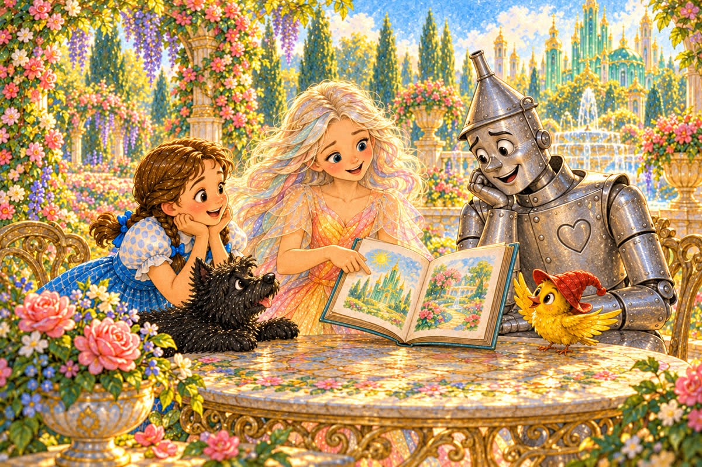
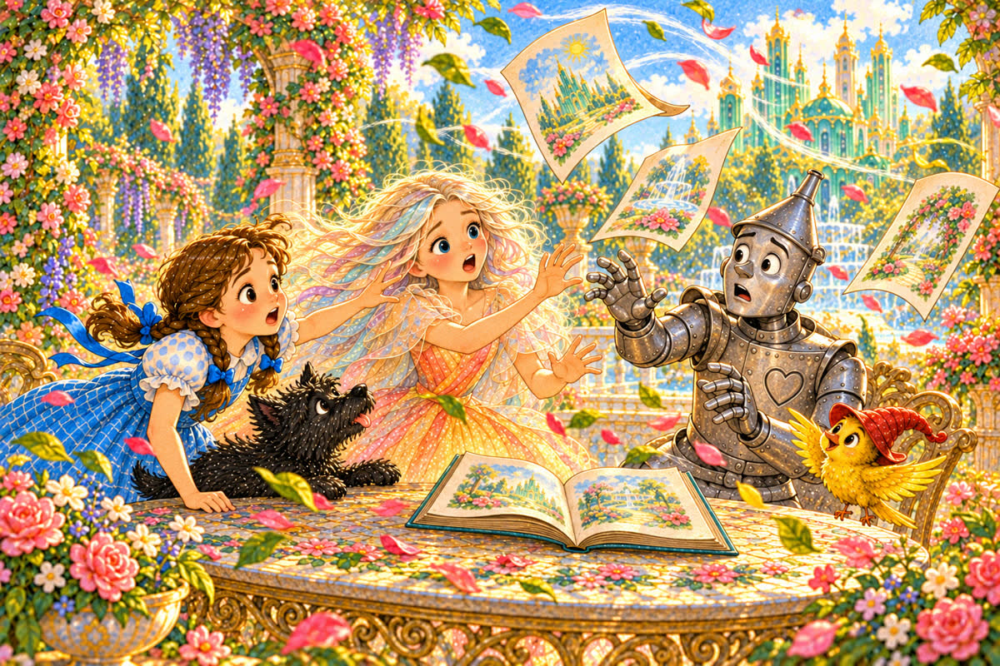
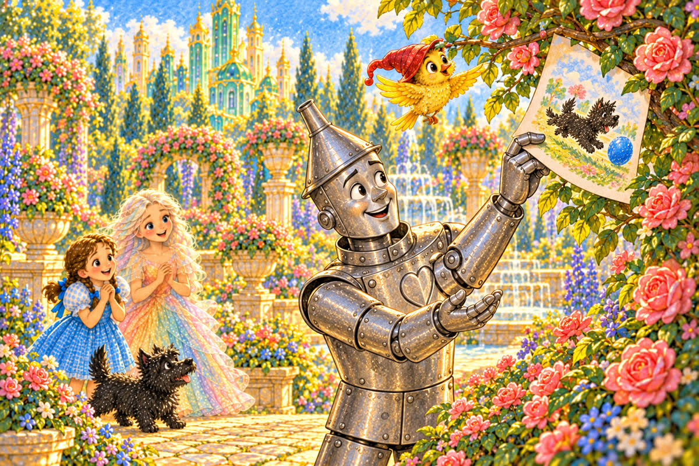
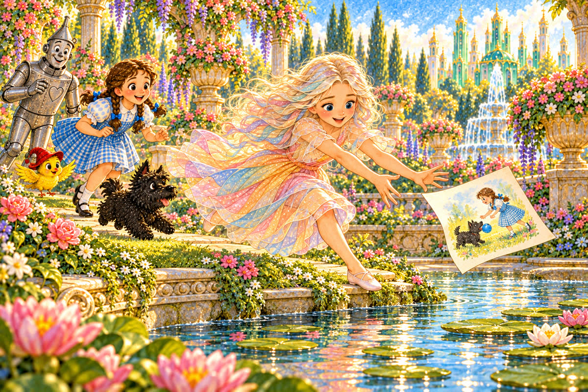
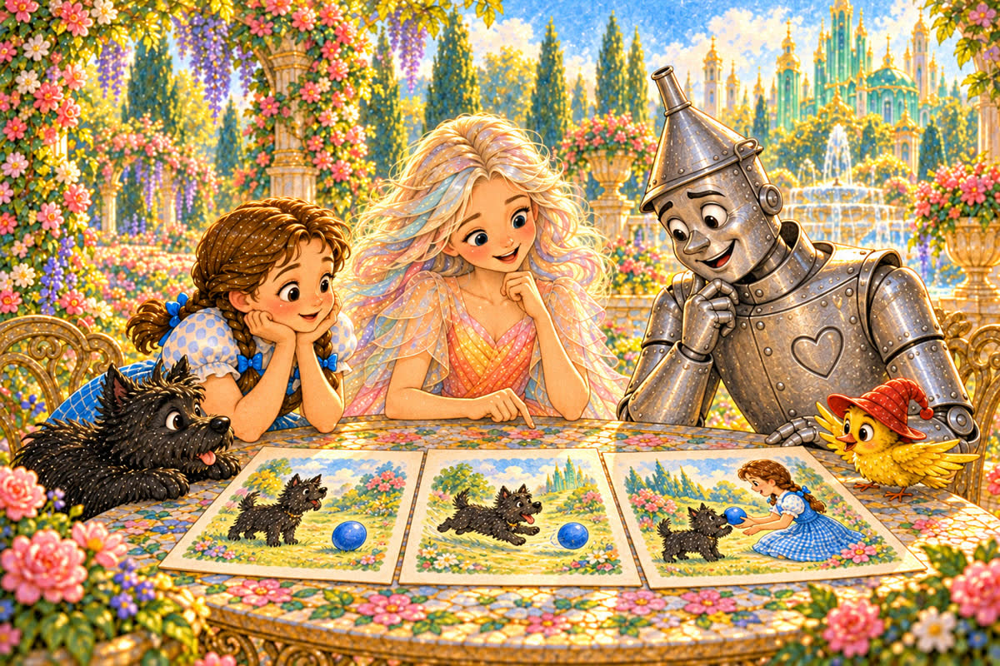
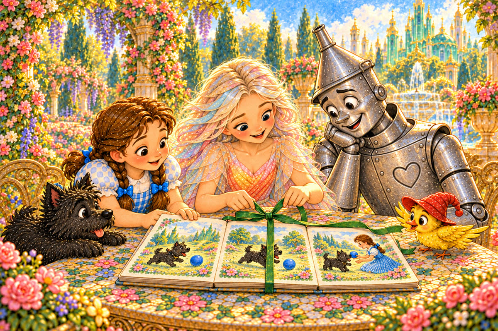
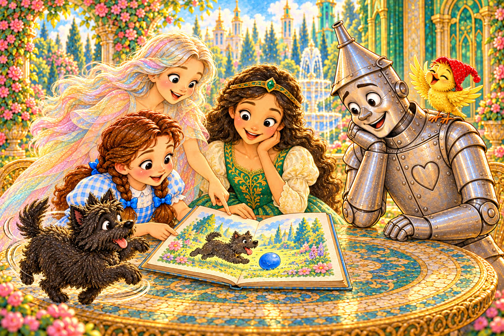

Pahina 1
Isang umaga, dinala ni Polychrome ang isang maliit na aklat sa hardin.
Siya mismo ang gumuhit ng mga larawan para kay Ozma.
Isang munting kuwento sa Lupain ng Oz
Basahin para sundan ang kuwento. Huminto lamang kapag may salitang humahadlang sa kahulugan.

Isang umaga, dinala ni Polychrome ang isang maliit na aklat sa hardin.
Siya mismo ang gumuhit ng mga larawan para kay Ozma.
Umupo siya kasama nina Dorothy, Toto, at Tin Woodman.
Dumapo ang ibong dilaw sa mesa.
“May tatlong pahina pa,” sabi ni Polychrome.

Biglang umihip ang malakas na hangin.
Lumipad ang tatlong pahina mula sa mesa.
“Hanapin natin bago masira!” sigaw ni Dorothy.
Ang unang pahina ay napunta sa ilalim ng mahabang upuan.
Suminghot si Toto at gumapang sa ilalim nito.
Hinila ni Dorothy ang pahina.

Nakita ng ibon ang ikalawang pahina sa mataas na sanga ng rosas.
Itinuro niya ito sa Tin Woodman.
Maingat niya itong kinuha.

Ang ikatlong pahina ay lumilipad patungo sa munting lawa.
Tumakbo si Polychrome at sinalo iyon bago mahulog sa tubig.
“Ligtas na!” sabi niya.

Bumalik sila sa mesa, ngunit hiwalay ang mga pahina.
Bawat isa ay may larawan ni Toto at ng asul na bola.
“Alin ang una?”
Hawak ng Tin Woodman ang larawang nakatingin si Toto sa bola.
“Ito ang una. Hindi pa gumugulong ang bola,” sabi niya.
Ipinakita ni Dorothy ang larawang hinahabol ni Toto ang bolang gumugulong sa landas.
“Ito ang sumunod,” sabi niya.
Masayang tumahol si Toto.
Itinaas ni Polychrome ang larawang ibinabalik ni Toto ang bola.
“Ito ang huli.”
Inayos nila ang mga pahina sa tamang pagkakasunod-sunod.

Itinali ni Polychrome ang mga pahina gamit ang luntiang laso.
Dumating si Ozma.
“May handog kami,” sabi ni Dorothy.

Salit-salitan nilang binasa ang aklat kay Ozma.
Tuwang-tuwa siya.
Tumingin si Toto sa sariling larawan, tumahol, at umikot nang masaya.
Kung gusto ninyong mag-usap